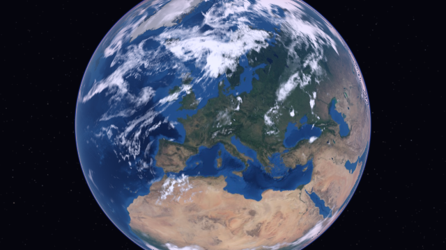
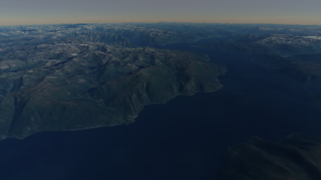
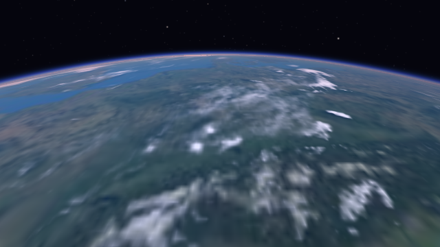
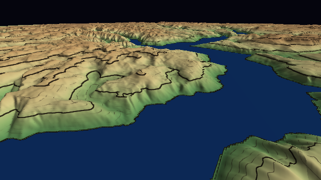
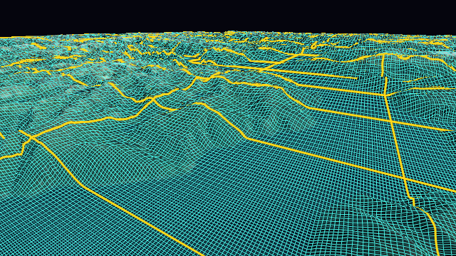

Your window, your loop
Your application keeps its window, main loop, camera and render target. vgl draws into the render pass you are in, and never presents, swaps or clears.
vgl is a lightweight, open-source C++ library that streams level-of-detail terrain and imagery on the WGS84 ellipsoid and draws it with OpenGL, OpenGL ES, WebGL 2, Direct3D 11 or Ogre, behind a stable C API.

Your application keeps its window, main loop, camera and render target. vgl draws into the render pass you are in, and never presents, swaps or clears.
The stable ABI is a C API of opaque handles and result codes, compatible within each major version. A header-only C++ wrapper adds RAII, spans and enum classes.
Double-precision geometry on the CPU, tile-relative vertices and logarithmic or reversed-Z depth: no jitter and no z-fighting, from orbit down to the ground.
Two runtime dependencies, stb_image and Zstandard. No global state, no threads or connections of its own, every allocation through your allocator, and memory within the budgets you set.
The bundled baker turns Copernicus DEM, GEBCO and your own imagery into sharded packs that load from disk or from any web server with HTTP range requests, with a disk cache for offline use.
Draw with your own renderer through the render interface, and bring your own I/O, task scheduling, allocators and logging: the built-in parts use the same public interfaces.




| Backend | Graphics API | Platforms |
|---|---|---|
| OpenGL / OpenGL ES | OpenGL 3.3, OpenGL ES 3.0, WebGL 2 | Windows, Linux, macOS, Android, iOS, browsers |
| Direct3D 11 | Direct3D 11 (feature level 11_0) | Windows |
| Ogre | Ogre 14 on OpenGL 3+ and Direct3D 11 | Windows, Linux |
| Your own | Anything, through the render interface | Anywhere the core builds |
Download a release archive for Windows, Linux or macOS, use the vcpkg port or the Conan recipe, or build from source with CMake. Then link it:
find_package(vgl 1 REQUIRED)
target_link_libraries(my_app PRIVATE
vgl::vgl vgl::defaults vgl::gl)Getting started walks through a complete program.
vgl hosts no datasets: you bake packs from the sources you choose and serve them
yourself. The baker reads any raster GDAL reads, converts vertical datums, and writes
deterministic packs; vgl-bake check tests a web server the way vgl and
browsers read it, and a reference server configuration for Caddy is included.
vgl-bake bake glo30-norway.json --jobs 16
vgl-bake check https://packs.example.org/glo30-norway